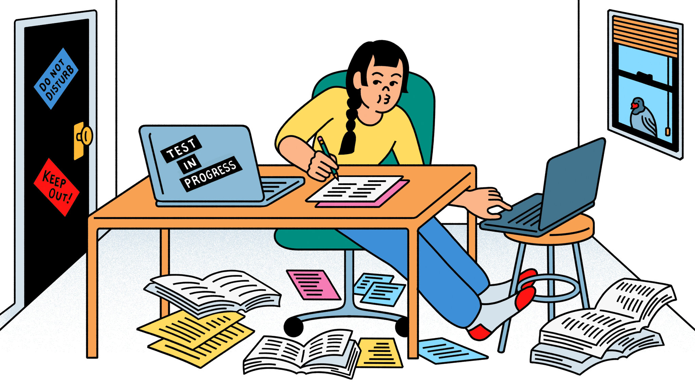

PLAGIARISM DETECTION IN ONLINE EXAMS
In the current scenario, computer-based exams have increased due to the pandemic, it is feasible to cheat the exam and obtain high scores through unorthodox methods, and it is also possible to detect unethical examinees. So, various data enthusiasts have used different approaches to detect them: some used camera video data for face patterns, others use computer display video data for anomaly detection, and so on. All of these approaches are good and work well for the problem. The difference between them and my approach is that I looked for patterns with mouse movements and keyboard strokes. I picked this method because the video data per examinee is too enormous, and I want something that uses less data, yet solves the problem. Mouse and keyboard strokes are textual data, the important necessary attributes for the project are mouse position, keystroke button, and time. That's it and the size of video data is 50-100 times more than our data. Due to efficiency in size and easy implementation of machine learning algorithms on textual data I have chosen this way.
For training and testing, I created an exam and collecting mouse movements and keystrokes where few are positive dataset and a few negative datasets and then I used machine learning techniques of different classification and different clustering algorithms on the collected data, also, I used anomaly detection techniques to find the data points which will help in improving the model. At last, I evaluated the result and if necessary redo the data collection over and over until I made final decisions and conclusions accordingly. I used data augmentation to address the problem of underfitting the model, as I will aim to obtain the proper quantity of data required for the project. The duration of the exam, the size of the screen (for establishing mouse locations), and other parameters all affect the mobility of data collection.
Click here to learn more